9 — Rua industrial
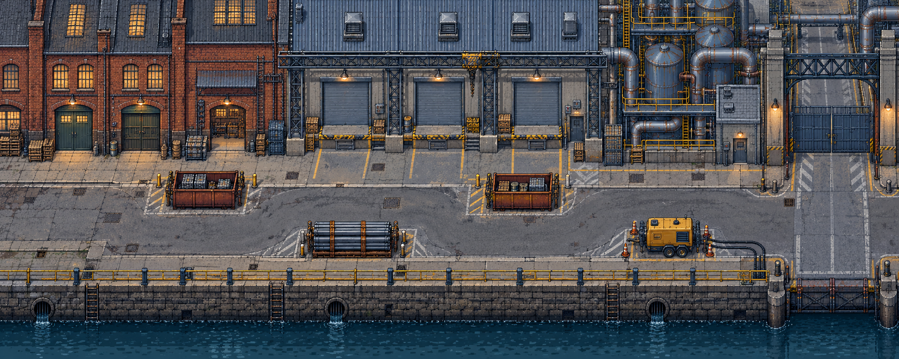
Conceito completo original

Conversão nativa final: 627 tiles de cenário.
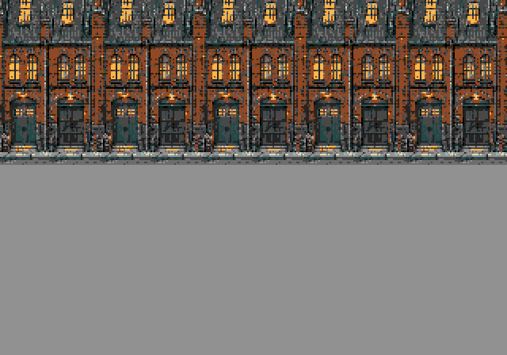
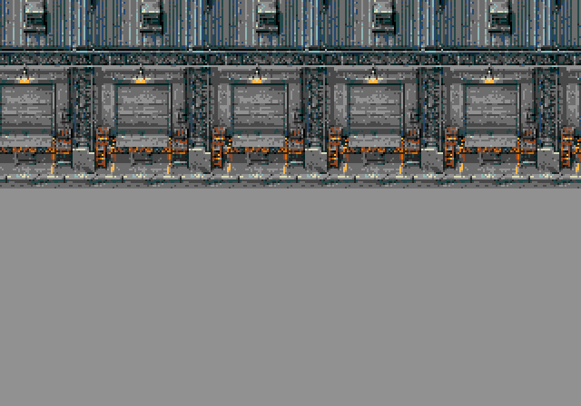
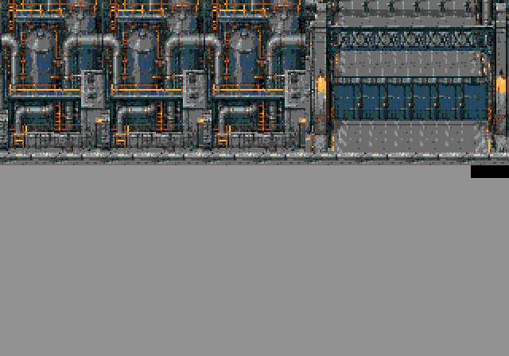
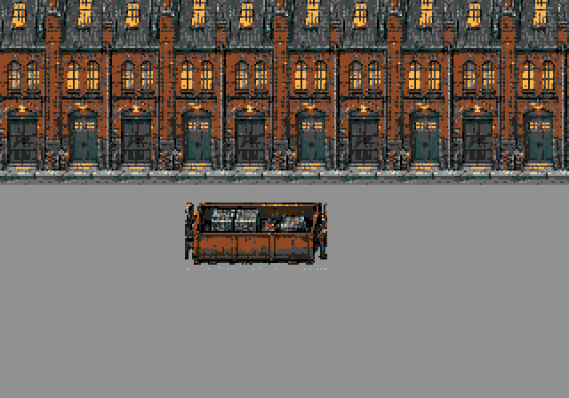
Imagem completa criada primeiro; extração posterior de módulos arquitetônicos completos e superfícies da própria imagem. Sem substituição aproximada de tiles. Cores RGB333, índice0 preto.
Crítica por ciclo · Geometria e limites

Conceito completo original
Conversão nativa final: 627 tiles de cenário.




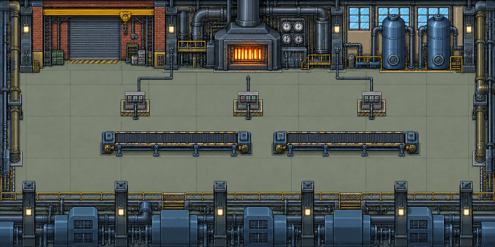
Conceito completo original
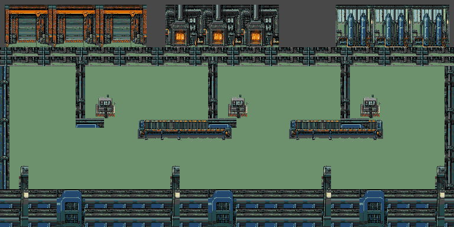
Conversão nativa final: 476 tiles de cenário.
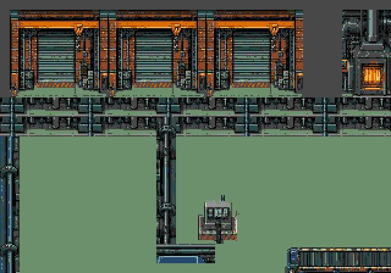
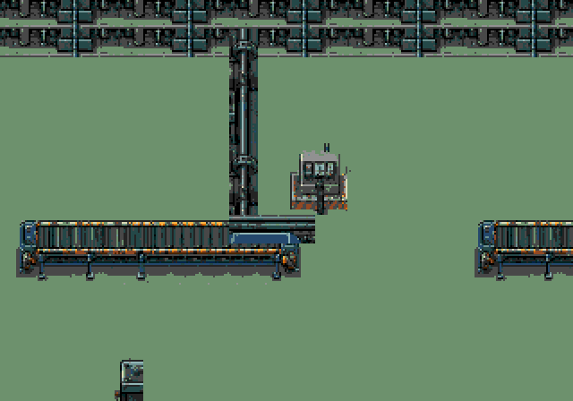
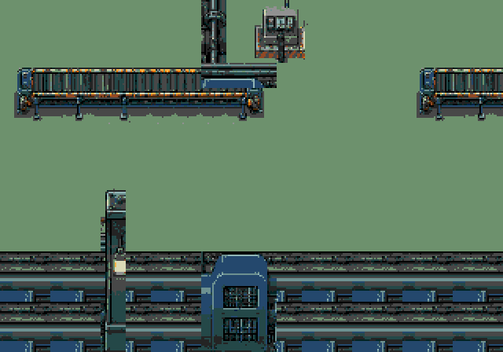
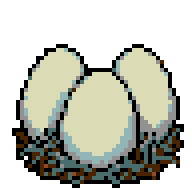
150 tiles incluindo os seis estados. Build isolada NTSC/PAL aprovada, exit0. A release conjunta recebe medição separada.
Capturas de obstáculos, ovos e válvula aberta. A inspeção encontrou construções legíveis, tubos conectados e nenhuma corrupção na rolagem.


Carga máxima60/50FPS; o pico NTSC da fábrica foi86,23%. A amostra de patrulha de20s terminou com vida NTSC100/64/44 e PAL35/55/7. Isso indica pressão sobre esse bot; equilíbrio humano ainda depende de uma campanha jogada.